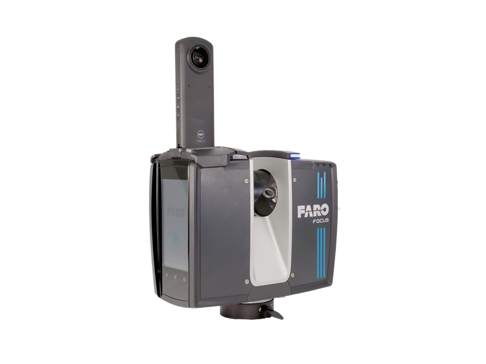

현장의 공간 정보를 정밀한 3D 데이터로 전환하는 레이저 스캐닝 솔루션

Focus Laser Scanning Solution은 건설, 플랜트, 제조 및 인프라 현장의 공간 정보를 빠르고 정밀하게 수집하여 3D 디지털 데이터로 활용할 수 있도록 지원하는 솔루션입니다.
현장에서 취득한 스캔 데이터는 설계 검토, 시공 검측, 유지보수, 디지털 트윈 구축 등 다양한 업무에 활용할 수 있습니다.
스캔 데이터를 통해 현장 상태를 빠르게 파악하고, 누락이나 오류 가능성을 줄여 더 효율적인 현장 조사를 지원합니다.
실제 현장 데이터를 기반으로 설계 데이터와 비교할 수 있어, 시공 오류나 변경 사항을 보다 빠르게 확인할 수 있습니다.
취득한 3D 데이터는 프로젝트 관계자와 공유하여 의사결정, 검토, 협업 과정에 활용할 수 있습니다.
스캔 데이터는 SCENE, As-Built, BuildIT Construction 등 관련 소프트웨어와 함께 활용하여 데이터 정합, 모델링, 검측 및 분석 업무에 연결할 수 있습니다.